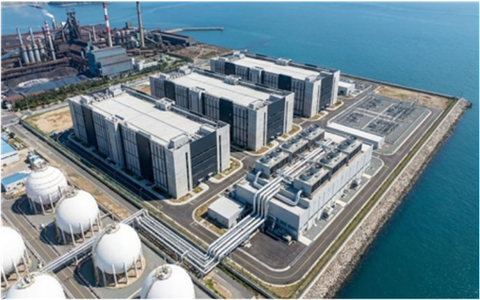

GAME 01 · 혁신상
광양 동호안 LNG 냉열 데이터센터 신축 사업
바다로 버려지던 LNG 냉열을 데이터센터 냉각에 끌어왔다. 300MW급 하이퍼스케일 AI 데이터센터를 두고 기획부터 운영까지 전 주기 CM 계획을 세웠다. 30m가 넘는 초연약지반은 제강슬래그 기초 치환으로, 빠듯한 공기는 토목·건축·설비 3-Track 병렬 시공으로 정면 돌파했다.
- Scale300MW (100MW × 3) · 연면적 180,000㎡ · 사업비 약 2조 5,200억 원
- Speed공기 30개월 · PC 모듈러 · PMDC 동시 시공으로 10개월 단축
- CoolingLNG 냉열 + 해수 하이브리드 냉각 · 연 1,763억 원 냉방비 절감 (추정)
- FinanceTwo-SPC (PropCo · OpCo) 분리 모델 · 15년 장기 선임대